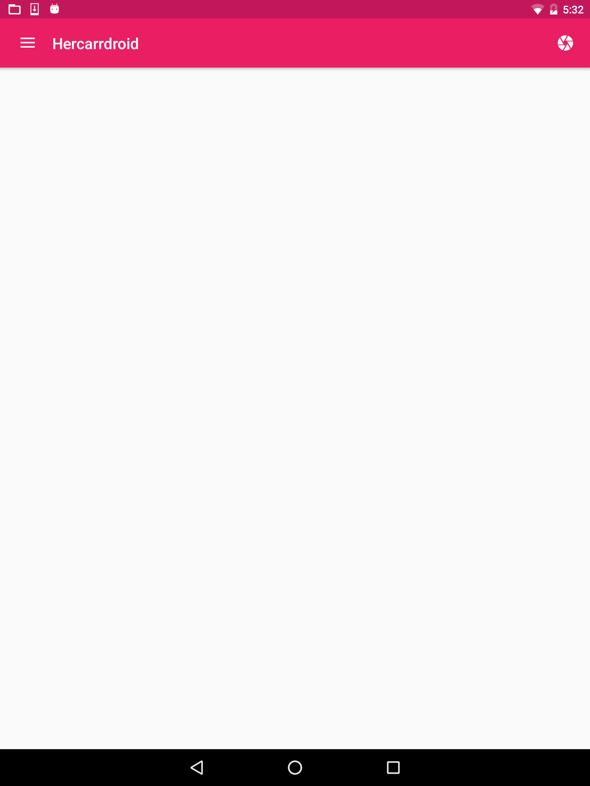
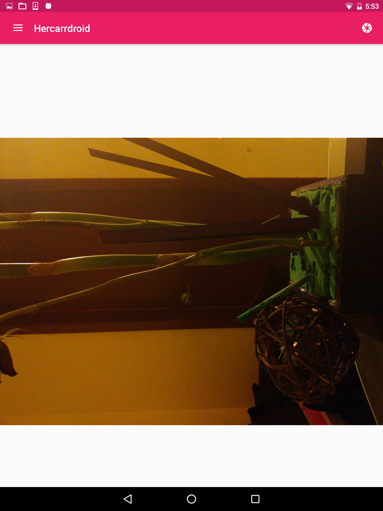

La cámara fotográfica es uno de las características físicas del teléfono más utilizadas. Incorporemos en nuestra aplicación el uso de la camára realizando lo siguiente:
Nota: Para los siguientes pasos se recomienda ejecutar la aplicación directamente en un dispositivo físico en ligar del simulador
1 - Generemos el fragmento
CameraFragment.java haciendo click en
File → New → Fragment → Fragment (Blank) sin seleccionar las opciones
Include fragment factory methods e
Include interface callbacks
2 - Incorporemos un ImageView al layout
fragment_camera.xml
3 - Descarguemos el siguiente icono
ic_camera para representar la opción del menú qus nos permitirá invocar a la cámara
4 - Definamos el menú
menu_camera.xml para incorporar la opción de captura de foto utilizando el icono anterior
5 - Actualicemos la clase
CameraFragment.java para incorporar el metodo factory y configurar el menú
6 - Actualicemos la clase
MainActivity.java modificando el método
onNavigationItemSelected para mostrar el nuevo fragmento al seleccionar la opción camera
- It's time to run the project & test it-

7 - Ahora para incorporar el uso de la cámara es necesario especificar los siguientes permisos en el archivo
AndroidManifest.xml
8 - Actualicemos la clase
CameraFragment.java para:
- * Definir los codigos de petición para el uso de la cámara así como la captura de fotos
- * Definir las referencias para el nombre del archivo, el image view así como la vista del fragment
- * Mostrar la cámara al seleccionar la opción del menú, considerando que para dispositivos con Android Marshmallow se requiere solicitar los permisos en tiempo de ejecución
- * Definir la ubicación en la cual se almacenará la imagen - la cual será una carpeta interna de la aplicación
- * Mostrar la imagen una vez se tome la foto
- It's time to run the project & test it-

9 - Ahora, actualicemos la clase
CameraFragment.java para corregir que la foto no se muestre rotada, para ello incorporemos el método que nos permita rotar la imagen sí es necesario
10 - Y en la misma clase contruyamos un Bitmap utilizando el método anterior, para que la imagen se rote en caso de ser necesario, este bitmap será el source del image view
- It's time to run the project & test it-
Interacción
Cámara
Nota: Para los siguientes pasos se recomienda ejecutar la aplicación directamente en un dispositivo físico en ligar del simulador
1 - Generemos el fragmento CameraFragment.java haciendo click en File → New → Fragment → Fragment (Blank) sin seleccionar las opciones Include fragment factory methods e Include interface callbacks
2 - Incorporemos un ImageView al layout fragment_camera.xml 3 - Descarguemos el siguiente icono ic_camera para representar la opción del menú qus nos permitirá invocar a la cámara
4 - Definamos el menú menu_camera.xml para incorporar la opción de captura de foto utilizando el icono anterior 5 - Actualicemos la clase CameraFragment.java para incorporar el metodo factory y configurar el menú 6 - Actualicemos la clase MainActivity.java modificando el método onNavigationItemSelected para mostrar el nuevo fragmento al seleccionar la opción camera
- It's time to run the project & test it-
- It's time to run the project & test it-
- It's time to run the project & test it-